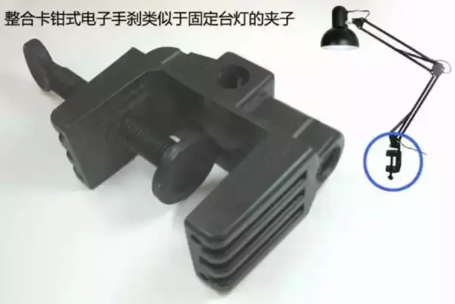

汽车手刹
车内手刹的使用方法：
1、松手刹（非工作状态，行车状态）：摁住手刹头部按钮，向上拉起后，摁下手柄到底即可；
2、拉手刹（工作状态，驻车状态）：直接上拉手柄到较高点即可。
手刹是辅助制动器，与制动器的原理不同，其是采用钢丝拉线连接到后制动蹄上，以对车子进行制动。
手刹拉得越高，制动力就越大，一般拉到七八成就行了。
手刹是通过手刹线连接到后轮的。因为它是一根钢丝，拉的时间久了之后就会被拉长，拉长之后如果还是拉起同样的高度，手刹力就会变小。手刹线的长度是可以调节的，如果调节后还是刹不住，可以更换手刹线。自动档拉到50%就行了，因为P档提供驻车制动力。如果大坡度停车，则需要把手刹拉到最顶，发挥最大制动力，以不溜车为前提。
手动档还要配合其它档操作，也就是熄火后再挂上一档或者倒档，让发动机制动辅助刹车。
手刹的作用是：
1、停车的时候上拉手刹，能够保持机动车静止不动，防止车子滑坡；
2、机动车行驶时，转弯时把手刹往上拉，可以起到漂移的效果；
3、紧急情况下手刹可以当成刹车使用。
拖车有两个手刹，右边那个通常是用于挂车制动的。
手刹还分这么多种，你分得清楚吗？
因为传统的驻车制动器就是用手来完成驻车动作的，所以驻车制动俗称“手刹”。
但现在很多驻车制动都不再靠手来完成了，分为好几种的“手刹”对新手来说找不到是件很尴尬的事情。
1 传统手刹
其实我们通常说的手刹专业称呼应该叫驻车制动器。与行车制动器（我们常说的脚刹）有所不同，从名字就能分辨出来。
行车制动是在车辆行驶过程中短时间制动使车辆停稳或者减速的，而驻车制动是在车辆停稳后用于稳定车辆，避免车辆在斜坡路面停车时由于溜车造成事故。
1.1 工作原理及结构
手刹属于辅助制动系统，主要借助人力，一般在停车的时候，为了防止车辆自行溜车而设立的。
手刹（驻车制动器）主要由制动杆、拉线、制动机构以及回位弹簧组成。是用来锁死传动轴从而使驱动轮锁死的，有些是锁死两只后轮。
对于制动杆，其实就利用了杠杆原理，拉到固位置通过锁止牙进行锁止。
手刹属于辅助制动系统，一般在停车的时候，为了防止车辆自行溜车而设立的.利用了杠杆原理，借助人力拉到固定位置通过锁止牙进行锁止.
箭头所指的位置为锁止牙,拉起手刹能听到"嗒嗒”的响声.
传统的驻车制动器为鼓式较常见。鼓式驻车制动器分为两种，分别是集成在鼓式行车制动器中的驻车制动，通过下图中的“拉线4”拉动“杠杆1”和“顶杆2”使得“刹车蹄3”张紧刹车鼓。

而另一种是在变速器的后方，传动轴的前方，这种又叫做中央驻车制动器。制动原理大体相似，只是安装部位不同。

这种中央驻军制动器在前置后驱车型中出现，商用车上运用较多，乘用车已经淘汰这种驻车制动器，其结构与鼓式制动器相似。
现在大多数乘用车都是采用四轮盘式制动器，其制动机构就集成在后轮的盘式制动器上。
有一些车的行车制动器和驻车制动器是分开的 ,因此它有两个刹车卡钳，两个卡钳共用一个制动盘，各自独立的作用。
有些超级跑车的后制动盘上有两个卡钳，现在你知道为什么了吧。
1.2 如何使用手刹？
进行驻车制动时，踩下行车制动踏板，向上全部拉出驻车制动杆。欲松开驻车制动，同样踩下制动器踏板。
将驻车制动杆向上稍微提起，用拇指按下手柄端上的按钮，然后将驻车制动杆放低到最低的位置。
进行驻车制动时，踩下行车制动踏板，向上拉起驻车制动杆。欲松开驻车制动，同样踩下制动器踏板，将驻车制动杆向上稍微提起，用拇指按下手柄端上的按钮，将驻车制动杆放低到勘氐的位置。
优缺点
与手刹配套使用的还有回位弹簧。拉起手刹制动时，弹簧被拉长；手刹松开，弹簧回复原长。
长期使用手刹时，弹簧也会产生相应变形。手刹拉线也同样会产生相应变形会变长。任何零件在长期、频繁使用时，都存在效用降低的现象。
不过这种手刹相对于后面要说到的几种驻车制动结构相对简单，成本低廉。
小结：传统的手刹驻车制动由于结构简单，成本低廉，在目前的汽车市场上还有很大一部分车辆在使用。
汽车技术日新月异，应用到汽车上的电子技术也层出不穷，在不久的将来传统的手刹将会被更新更先进的技术所取代。
2 P挡
在说p挡之前，我们不妨来看看手动挡车型怎样驻车的。手动挡车型驻车只要三步（停车f 空挡f拉手刹）就可以完成。
按理来说，自动挡车型驻车同样也只需三步（ 停车fN档一拉手刹）就可以完成。那自动挡车型中的P挡是干什么用的呢？
不妨再拿手动挡车型来看看，对于坡道驻车，手动车型停稳了车拉起手刹之后会挂入一个低速挡来辅助驻车。
那么自动挡中P挡就相当于手动挡中的低速挡位来使得车辆停稳。
工作原理及结构
为了让自动挡车型能像手动车型可以通过挡位来限制车辆的移动，因此在自动变速箱中设置了P挡。
P挡主要有一个锁止齿轮以及一个锁止机构构成（图中的锁销、回位弹簧、下压装置、棘爪弹簧、工作销以及工作销预紧弹簧等）。
锁止机构与锁止齿轮结合就可以直接固定与车轮相连的变速箱输出轴，通过半轴便可以锁止车轮。
P挡该如何使用？
自动挡车型中P挡驻车只需N步（踩下行车制动踏板→停车→挂入N挡→松开制动踏板→ 拉起手刹→熄火→踩下制动踏板→挂入P挡） 就可以完成。至于为什么这么复杂，主要还是因为自动挡变速器结构复杂，车未停稳挂P挡 ,当车辆再次被移动后会造成P挡齿轮与锁止机构卡死或者对变速器有刚性冲击。
所以要待车辆停稳后再挂入P挡，这就是为什么上面说到要拉起手刹之后才能挂入P当的原因。
优缺点
P挡驻车结构不算太复杂，但是要正确操作很麻烦。如果使用P挡过程中碰上追尾事故 ,对变速器造成的刚性冲击那将是极具破坏性以及毁灭性的。行车时更加不能挂入P挡哦！
小结：虽然P挡驻车功能相当于手动挡车挂入的低档，但是P挡轰油门就与挂入N当轰油门差不多的，基本上对车辆没什么影响。
而不拉手刹直接P档在坡道上停车则可能会造成锁止机构与P挡齿轮卡死，严重时可能无法松开，这时候只有想办法轻轻挪动一下车子，是轻轻的哦，一点点就好。
由于P挡融合在变速器当中，作用也是辅助驻车。如果你是一个爱车人士，小编还是建议，尽量不要将车辆停放在坡道中，厉害前面已经说到。
迫不得已而停之最好还是搬块石头垫一下车轮。
3 电子手刹
这里耍说到的电子手刹，其实就是传统手刹的升级，变传统手刹的手拉为电动。电子手刹就是利用电脑控制电机夹紧或松开手刹。
用按钮P代替了手刹拉把，整个控制逻辑并不复杂。这样一来给带上个“电子”的帽子似乎是有点高调了哈。
工作原理及结构
常见的电子手刹有拉索式与卡钳式两种。拉索式电子手刹与传统拉索式手刹差别不大 ,同为制动蹄式，只是把手动的拉索改为电动形式。
正是因为拉索式电子手刹的加装成本低，因而更利于车型的设计变更。
整合卡钳式电子手刹是通过整合在刹车壳体上的电机驱动压紧刹车盘来做到的。就类似于一种固定台灯的夹子。 
整合卡钳式电子手刹需要专用的制动卡钳和相关的驻车制动执行机构，因而成本相对较高。
但整合卡钳式电子手刹摒弃了钢索牵引式子手刹的钢索，采用了电线进行信号传递，因而更利于车辆组装及手刹系统简化。
如果坡道塞车，每次起步都要按一下，那就显得太不科学了。其实，电子手刹还是比较科学的，每次起步车轮扭矩达到一定扭矩时会自动释放，达到简化目的。
在行车过程中遇到紧急情况需要制动，可以按下电子手刹按钮。此时车辆的刹车并非机械的驻车手刹。
例如大众迈腾的电子手刹在7km/h以上的速度是就是先通过ESP控制单元以略小于全力刹车的力道对全部四个车轮进行液压制动。
当速度在7km/h以下时，才是直接施以驻车手刹制动。只要刹车管线和电路没被破坏，哪怕是车辆意外熄火，电路仍然接通，该功能依然有效。
电子手刹如何使用？
通过一个按键来启动或者关闭手刹功能。 启动电子手刹可以在车辆任何状况下进行启动 ,即使在行进过程中误按。
由于油门还处在工作位置所以电子手刹功能也会立即关闭；如果在紧急刹车过程中按下。
大部分电子手刹系统都会额外提供更强的制动力来辅助，部分车型更具有电子制动力分布以及限速制停的功能。
优缺点
电子手刹除了带来方便和节省空间以外，对于想通过拉手刹玩儿花样的车友注意了，电子手刹是无法做甩尾动作的。
另外电子手刹成本略高。更重要的是，当车蓄电池失灵的时候电子手刹的功能也会同样出现问题。
小结：电子手刹就只有两种状态，要么是拉紧要么是松开，刹车的力道不线性。但是，传统手刹只会锁紧后轮。
除需甩尾外，笔者真想不到在行驶中有拉手刹的需要。行驶过程中如果需要紧急制动，按下手刹按钮。
电子手刹会根据车速选择适当的制动力保证行驶的安全性，这样就更加提高了主动的安全性能。
3 自动驻车(AUTO HOLD)
自动驻车系统(auto HOLD)是一种在汽车运行中可以实现自动制动的技术应用。
在启动自动驻车制动的情况下，这项技术使驾驶者在车辆停下时不需要长时间刹车，并且能够避免车辆不必要的滑行。
工作原理
自动驻车功能的实现与简单使用电子手刹有一些区别。比如车主们在等红绿等短暂驻车时，会使用手刹。
此时的响应速度会比较慢。因为这个动作的完成需要几步(踩刹车→挂空挡→按下电子手刹按钮→等待→踩刹车→挂档→松开电子手刹)
这是一个漫长的过程。而自动驻车系统的功能实现是另外一种原理。
当车辆临时停驻，并且在很短一段时间之后就需要重新起动时，驻车就交由ESP控制的刹车来完成。
电脑会通过一系列传感器来测量车身的水平度和车轮的扭矩，对车辆溜动趋势做一个判定，并对车轮实施一个适当的刹车力度。
AUTO HOLD使用注意些什么？
1.刚才视频己经提到，要启动AUTO HOLD 必须是车门全部关闭，安全带扣上。等红绿灯 、堵车、上坡缓慢跟车建议开启AUTO HOLD, 可以保证不后溜。
2,倒车时建议关闭AUTO HOLD,系统反复的锁止与打开，在狭窄的空间里会产生不安全感。有的车型在倒车时可能会自动关闭，具体要请各位看自己的说明书。
3.使用了AUTO HOLD起步时，油门要温柔点，给AUTO HOLD一点解锁的时间。
auto HOLD自动驻车与坡道辅助有什么区别呢？
自动驻车系统(auto HOLD)是基于电子手刹系统的，而上坡辅助系统(HAC、HHC等 ,各厂商命名不同)是基于ESP系统的。
只要启动自动驻车不论平地还是坡路系统都会持续保持制动，直至传感器感知到油门踏板被踩下。
而坡道辅助则是检测到车辆处于坡路上时系统才会工作，并且只保持短暂(2—3秒)制动后自动取消对车辆的制动，与油门踏板无任何关联。
总结：传统手刹虽然比较“传统”，比较简单，但是刹车力道线性且可随意控制。对于喜欢汽车运动人士还是比较合适的。加上传统手刹结构比较简单，成本也比较低。
而电子手刹过于“电子化”，导致刹车力道不线性，只有刹紧和断开两种状况，但是操作简便且轻松，对于拉起手刹柄感觉到困难女士则比较适合。
对于AUTO HOLD功能，比较适合与“懒人 ”或者业务繁忙人士，它可以避免使用手刹或电子手刹而简化操作。
自动挡车型也不用频繁的D到N、D到P来回切换了。简化了操作，赢得便利的同时，也减少了 “溜车”带来的意外发生。
不过，为了环保和减少传动系统磨损，自动挡型短时停车还是适时挂入N档更好。
如何正确使用手刹？新手要牢记
手刹也称为驻车制动器，停车后和起步前的动作一定是拉手刹或者松手刹，新手司机首先不要忘记，有停车忘记拉手刹的，也有开车忘记松手刹的。今天我们来说一下关于手刹的几个小知识，有助于你更好的利用手刹，延长寿命。
手刹分为电子手刹和机械手刹，电子手刹只有一个开关，控制后轮的手刹电机，用电机旋转的力量控制拉手刹和松手刹，不需要人的力气了。电子手刹在使用上比较简单，我们只能决定是否拉手刹，但松紧度我们决定不了，只要拉了，就是最大制动力。电子手刹没有故障的话，拉上后一般都是非常紧的，绝对不会出现拉着手刹行驶的情况。因为即使拉着手刹，稍加油门后就会自动松开，如果不松开，那是无法起步的，手刹的制动力很大。
下面我们重点来说一下机械手刹，机械手刹我们能够控制制动力，拉的低制动力就小，拉的高制动力就大。无论电子手刹还是机械手刹，刹的都是后轮，只有后轮有制动力，前轮没有。机械手刹是通过手刹拉线，也就是一根钢丝连接到后轮的手刹系统的，手刹力是通过手刹线传递的。因为它是一根钢丝，拉的时间久了之后就会被拉长，拉长之后如果还是拉起同样的高度，手刹力就会变小。但手刹线的长短是可以调整的，如果感觉手刹拉到顶之后，还是刹不住，坡道上溜车，那么就需要调整手刹了，也就是把有效的手刹线缩短。不过可调整的范围有限，如果手刹线被拉的太长，已经调整的极限了还是溜车，就需要更换新的手刹线了。更换手刹线的工时费稍高，配件并不贵。
所以我们拉手刹的松紧要根据路况决定，不要每次都拉到最顶，如果每次都拉的过紧，手刹线被拉长所用的时间就越短，会更早的就需要更换手刹线了。如果在平路停车，手动挡车最多拉到手刹80%的高度就可以了，发挥出80%的制动力完全能够保证不溜车。自动挡车可以拉到50%就可以，因为还有P挡提供驻车制动力。如果在大坡上停车，则需要把手刹拉到最顶，发挥最大制动力，以不溜车为前提。手动挡还要配合别挡操作，也就是熄火后再挂上一挡或者倒挡，让发动机制动辅助刹车。
冬天快要来了，冬天冰雪天气以及傍晚刚洗完车后，最好找到一个平路停车轻拉手刹或者不拉手刹。因为手刹线内部可能会进水，进水后晚上会结冰。第二天开车放开手刹后，因为手刹线被冻住而无法松开，导致手刹无法松开一直处于刹车状态，无法正常起步。
本页共57段，6771个字符，17614 Byte(字节)